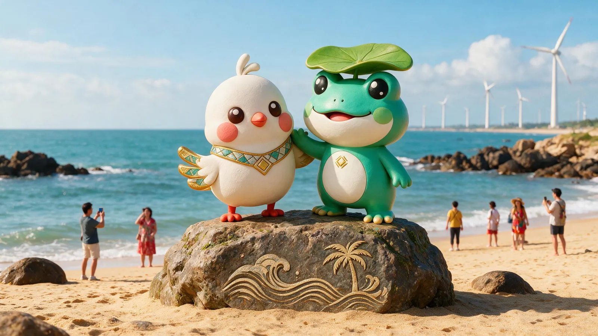
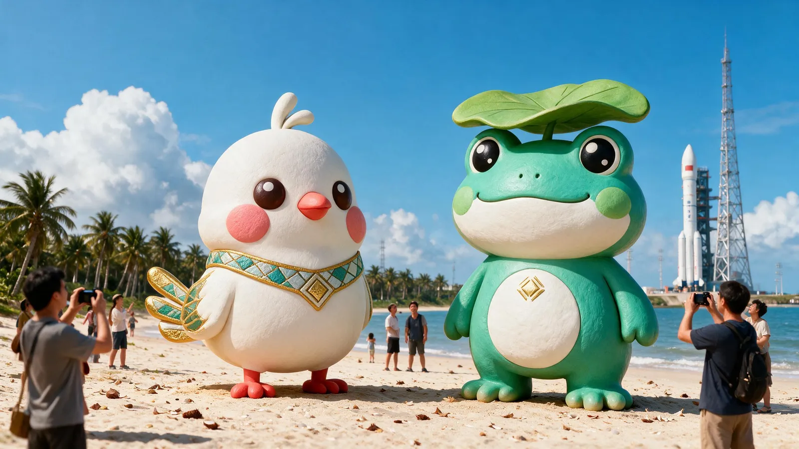
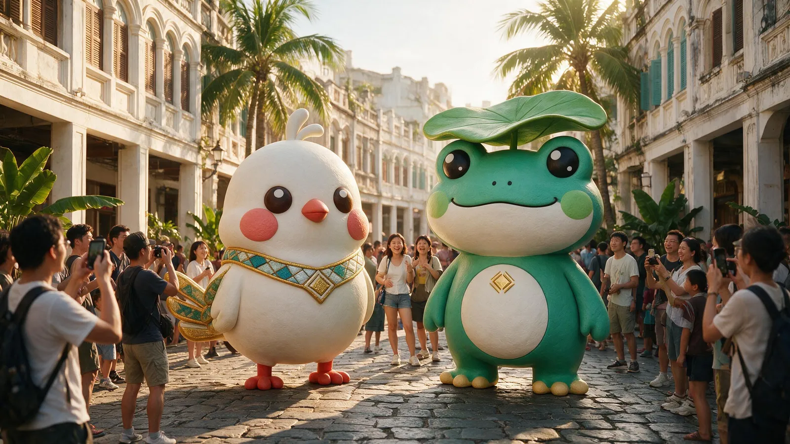
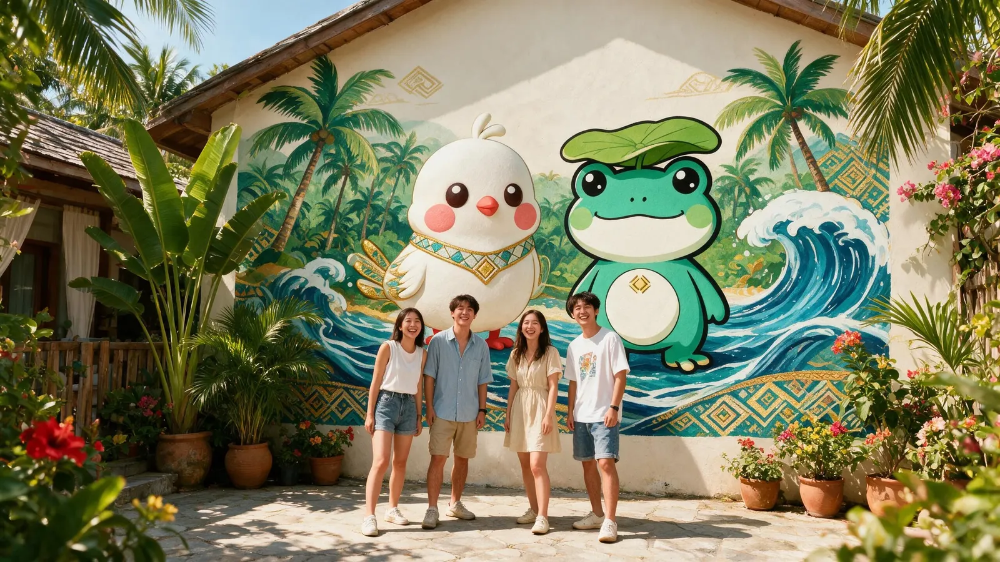
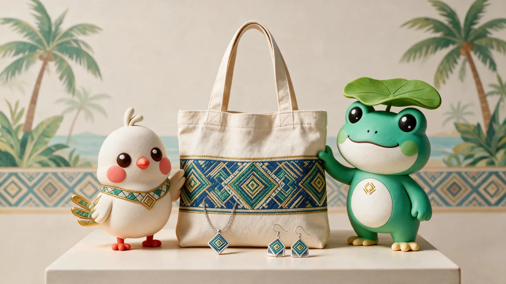

把 IP 立在风景里 · 节庆里 · 产品里The IP in landscapes, festivals and goods
文旅落地 · 景区 · 节庆 · 文创IP World · Spots · Festivals · Goods
从三亚天涯海角到万宁日月湾，甘米米和呱噜噜以大型打卡雕塑出现在海南六地；三月三巡游、免税店快闪、国际展会，也有这对活宝的身影。From Sanya's Tianya Haijiao to Wanning's Riyue Bay, the duo appears as photo-spot sculptures across Hainan, and shines in the Sanyuesan parade, duty-free pop-ups and international expos.




节庆巡游与快闪Festival Parade & Pop-up
三月三的巡游队伍里，甘米米和呱噜噜成为最亮的人偶；免税店的文创快闪体验馆里，海南自贸港的新故事正在发生。In the Sanyuesan parade, the duo becomes the brightest puppets; in the duty-free culture pop-up, a new Hainan FTEP story unfolds.

跨境文创与展会Cross-border Goods & Expo
黎锦纹样做成首饰与环保布艺包，双语海报与茶饮包装走进国际展会——让海南文化成为可以被带走、被分享的商品。Brocade motifs become jewelry and canvas totes; bilingual posters and tea packaging enter international expos — Hainan culture becomes goods people can carry and share.
